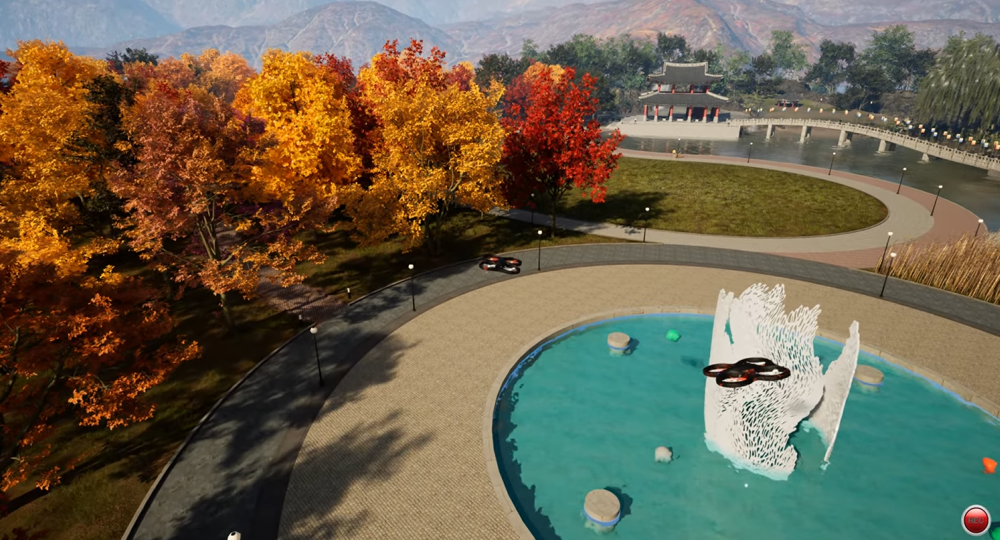
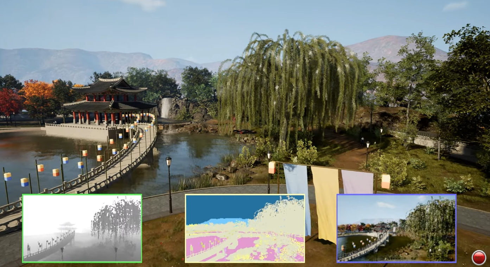
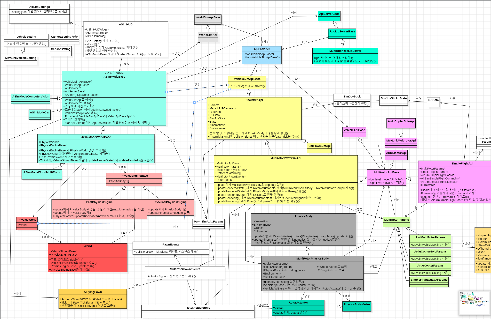
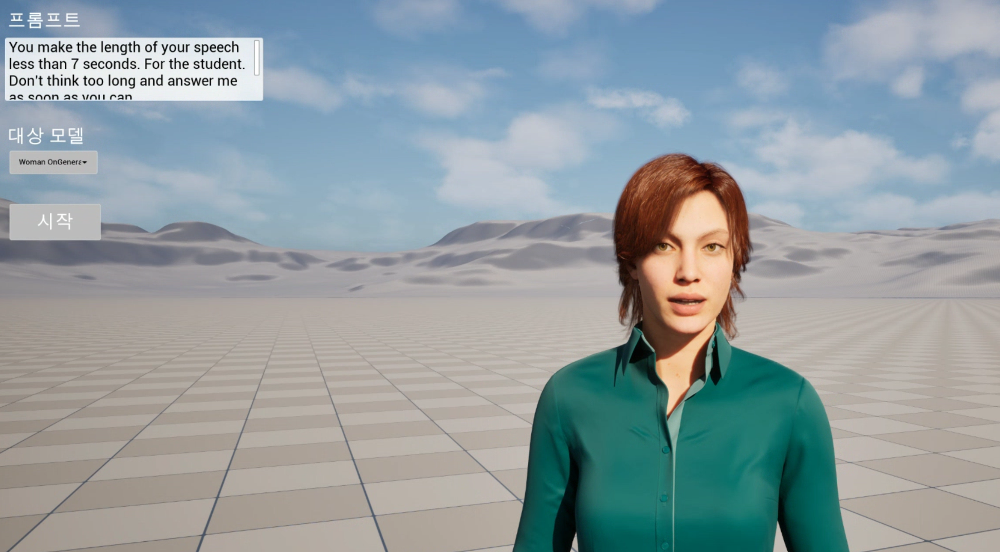

2025 - 2026 / Internal R&D Samples
AirSim 분석 / AI 대화 콘텐츠
사내 활용 가능성을 검토하기 위해 짧은 기간 진행한 연구성 샘플 작업. AirSim 드론 샘플과 AI 대화형 캐릭터 콘텐츠는 목적이 다른 별도 작업으로 나누어 진행
AirSim 분석


AirSim을 사내 시뮬레이션/드론 샘플에 활용할 수 있는지 확인하기 위해 기능 구조와 사용 흐름을 분석
AirSim 주요 기능과 클래스 관계를 조사하고 SimMode, VehicleApi, PawnSimApi, Physics, API Server 흐름을 클래스 다이어그램으로 정리
연속 Waypoint 기반 드론 Path 이동 기능을 제작하고, 회사 홍보용으로 기존에 제작된 공원 프로젝트 맵과 Cesium 해외 샘플 맵에 다수 드론 배치
드론 이동, 센서 HUD, 카메라 화면을 구성하고 샘플 동영상 촬영

AI 대화 콘텐츠

가상 캐릭터와 음성으로 대화하는 샘플 콘텐츠를 제작해 Unreal 기반 대화형 콘텐츠 가능성 검토
Google Live API 사용법을 조사하고 마이크 음성 데이터 송신, 음성 데이터 수신 흐름 구성
립싱크 플러그인은 음성에 맞춘 입 모양 처리에 사용하고, Idle 상태의 눈썹 변화, 입꼬리 변화, 눈 깜박임은 커브를 직접 조절해 보완
캐릭터가 카메라를 바라보도록 Aim Control Rig를 추가해 대화 대상에게 시선이 향하는 기본 연출 구성
제한 사항, 컨셉 프롬프트, 언어, 목소리 편집 UI를 적용해 대화형 캐릭터 설정 흐름 구성